Graph Mode group
The Graph Mode group sets a visual property of particles over the particles' lifespan. There are eight Over Life options. By default, the Off option is chosen and Graph Mode is disabled. The other seven options each set a different property like Size, Color or Opacity.
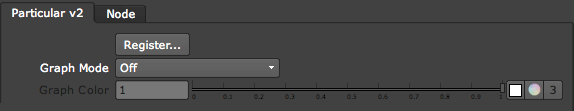
The Graph Mode group.
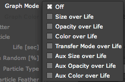
The eight Graph Mode options.
Color Over Life, Aux Color Over Life
Color Over Life defines the color variation of a particle over its lifespan. Aux Color Over Life sets the color variation of an Aux particle over its lifespan.
When you choose either option, a gradient panel appears in the Viewer pane. The gradient is made from a number of color boxes, and the gradient is interpolated between those boxes. There are control areas for setting a color on the gradient, choosing a preset and randomizing or reversing the gradient. See more below.
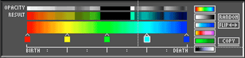
Color Over Life panel.
Size Over Life, Aux Size Over Life
Size Over Life sets the size of a particle over its lifespan. Aux Size Over Life sets the size of an Aux particle over its lifespan.
When you choose either option, a graph panel appears in the Viewer pane. You can set the size with a custom curve-drawing interface or graph preset buttons. See more below.
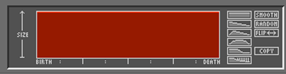
Size Over Life panel.
Opacity Over Life, Aux Opacity Over Life
Opacity Over Life sets the opacity of a particle over its lifespan. Aux Opacity Over Life sets the opacity of a particle over its lifespan.
When you choose either option, a graph panel appears in the Viewer pane. You can set Opacity with a custom curve-drawing interface or graph preset buttons. See more below.
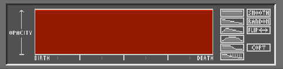
Opacity Over Life panel.
Transfer Mode over Life
Transfer Mode Over Life sets the transfer mode of a particle over its lifespan. The graph also lets you blend different transfer modes over the particle's lifetime. The transfer mode is determined by the Transfer Mode parameter in the Particle tab. This option is only active when the Normal Add Over Life or Normal Screen Over Life mode is selected in Particle tab> Transfer Mode.
When you choose this option, a graph panel appears in the Viewer pane. You can set Transfer Mode with a custom curve-drawing interface or graph preset buttons.
Mode Over Life is useful when transforming a volume of particles from one appearance to another over time. For example, let's say that you are creating flames that turn into smoke. While the particle is in the flame, the Transfer Mode should be Add or Screen, since flames are a light source, and you want the particles to appear to add to the brightness in the scene. As the particles becomes smoke, the Transfer Mode should become Normal, since smoke particles should obscure other particles and objects in the composition.
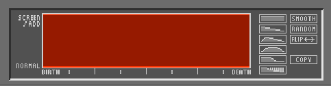
Transfer Mode over Life panel.
Graph Color Row
When Color Over Life is chosen, the Graph Color Row ungrays. There are four parts to the Graph Color Row.
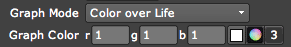
• The R, G and B fields let you type in a specific RGB value.
• Click the square Color icon to display a Color Eyedropper. Command-Click [Mac] or Control-Click [Windows] in the Viewer pane on the color you want to select.
• Click the circular Color icon to bring up a Color Picker panel. Inside the Color Picker, you can edit the graph color property to change the swatch color.
• Click the Number '3' icon to turn the RGB fields into a single field. You can input any kind of color mode value into this field.
The Color Gradient
There are three regions of the Color Gradient.
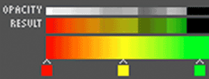
Color presets and buttons
There are five buttons in the Color Graphs.
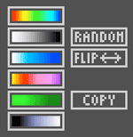
Over Life graph presets
There are six graph presets used by Size Over Life, Opacity Over Life, and Transfer Mode Over Life. To select one of the Over Life presets, click its preset button. This will immediately change the value graph to the selected preset.
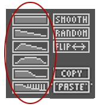
The graph preset buttons.
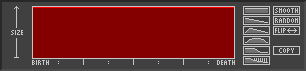 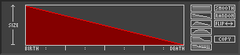 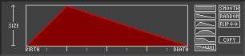
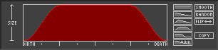 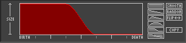 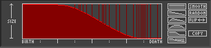
The six graph presets.
• Constant Graph Over Life: Maintains the maximum value through the life of the particle.
• Linear Decay Graph Over Life: Transitions from the maximum value to 0 through the life of the particle.
• Rise and Decay Graph Over Life: Starts at 0, rises to the maximum value at one quarter of the life of the particle, then decays to 0 at the end of the particle's life.
• Gaussian Graph Over Life: Smoothly transitions from 0 at birth to the the maximum value one quarter of the way through the life of the particle, maintains the maximum value until three quarters of the way through the life of the particle and smoothly transitions to 0 at the end of the particle's life.
• Half and Half Graph Over Life: Maintains the maximum value through nearly half of particle's lifespan, then quickly transitions to 0.
• Smooth Decay with Random Graph Over Life: Starts out at the maximum value, then between one quarter and three quarters of the lifespan the values ease to 0. Once the transition begins in the graph, random maximum value appear through the rest of the lifespan. This is useful on the Opacity Over Life graph to create the appearance of randomly sparkling particles like fireworks fading out but sparkling briefly as they fade.
Draw a custom curve
To draw a curve, click inside the drawing area and 'paint' the graph line.
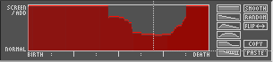 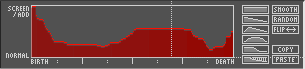
The Graph Mode buttons
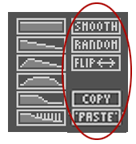
Smooth button
The Smooth button smoothes the transition between the graph values. This is especially helpful when you have drawn a custom curve.
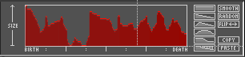
At left, a custom drawn graph. At right, the Smooth button smoothes the graph values.
Random button
The Random button sets the graph to completely random values. Each click of the Random button brings up a new set of random values.
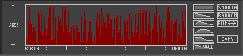
After the Random button is clicked.
Flip button
The Flip button flips the graph at the center point between birth and death. This is useful, for instance, for turning a Linear Decay Graph into a linearly increasing graph.
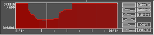
At left, a custom drawn graph. At right, the graph values are flipped.
Copy button, Paste button
The Copy button copies the graph values to the clipboard. The Paste button pastes the resulting graph from the clipboard. If nothing has been copied, then the Paste button will not appear in the panel. Copy/Paste is useful for moving the graph value between the main Particle tab and the Aux System tab, or between the Size Over Life and Opacity Over Life graphs.